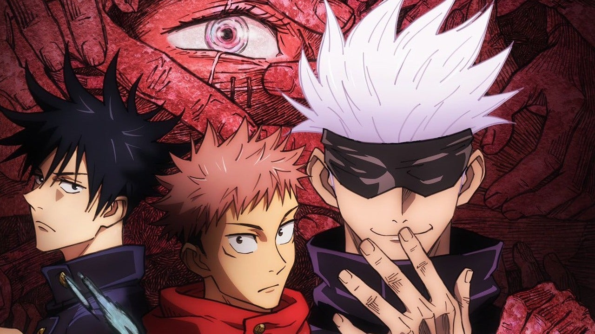

Anime Tier List
10. Death Note

Death Note е вече класическо аниме, което следва Light
Yagami, тийнейджър, който придобива свръхестествени
способности чрез Death Note. Книга, която дава на
потребителя възможността да убива всеки, когото поиска,
само като напише името на този човек в книгата. Със силата
на Смъртната бележка и гениален интелект Лайт тръгва на
геноциден „морален“ кръстоносен поход, който засяга света.
Това, което следва отвъд, е котка и мишка между
изследователи от световна класа, които съперничат на Лайт в
хитрост и интелект. Това шоу продължи да вдъхновява много
други аниме шонен с мрачен герой, както и много адаптации
на живо. Което с право печели мястото си на едно от най-
добрите и влиятелни анимета на всички времена.
Гледай:
9. Another
Преди двадесет и шест години в трета класна стая на средно
училище имаше ученик на име Мисаки. Като отличник, който
се справяше и със спорта, чаровното момче се радваше на
популярност сред съучениците си. Когато внезапно починал,
съучениците му решили да продължат така, сякаш е жив до
дипломирането. След това, през пролетта на 1998 г., момче на
име Сакакибара Куичи се премества в тази класна стая и става
подозрителен към страховитата атмосфера в тази класна стая.
По-конкретно, има красиво, отдалечено момиче на име Мей
Мисаки, което носи превръзка на очите и винаги е само,
рисувайки картини.
Гледай:
8. Fullmetal
Alchemist:Brotherhood

Двама братя губят майка си от нелечима болест. Със силата
на „алхимията“ те използват знания табу, за да я възкресят.
Процесът се проваля и като такса за използването на този тип
алхимия, по-големият брат Едуард Елрик губи левия си крак,
докато по-малкият брат Алфонс Елрик губи цялото си тяло.
За да спаси брат си, Едуард жертва дясната си ръка и успява да
прикрепи душата на брат си към броня. С помощта на семеен
приятел, Едуард получава метални крайници - "automail" - за
да замени изгубените си. С това Едуард се заклева да търси
Философския камък, за да върне братята в оригиналните им
тела, дори ако това означава да станете „държавен алхимик“,
който използва своята алхимия за военните.
Гледай:
7. Fairy Tail

Люси, 17-годишно момиче, тръгва на пътешествие, за да
стане пълноценна магьосник и се присъединява към най-
силната и
известна гилдия FAIRY TAIL, където тя среща
Нацу, Хепи, Грей и Ерза, които се отнасят към нея повече като
към семейство приятели. Тази епична поредица ни превежда
през всички опасности, които членовете на Fairy Tail се
изправят и в крайна сметка се преодоляват чрез взаимна
любов и приятелство
Гледай:
6. Hunter × Hunter (2011)
Gon Freecss е младо момче, живеещо на Whale Island. Той
научава от "Хънтър" Кайт, че баща му, за когото му е казано,
че е мъртъв, все още е жив някъде като топ "Хънтър",
рискувайки живота си, за да търси неизвестни предмети, като
скрити съкровища, куриози, екзотични живи същества и т.н.
Гон решава да стане професионален ловец и напуска острова.
За да стане ловец, той трябва да премине изпита за ловец,
където среща и се сприятелява с трима други кандидати:
Курапика, Леорио и Килуа. Може ли Гон да премине това
страхотно препятствие, изпита за ловец, за да стане „Най-
добрият
ловец в света“ и евентуално да срещне баща си?
Гледай:
5. The Seven Deadly Sins

Седемте смъртни гряха някога са били активна група рицари
в района на Британия, които се разпадат, след като се
предполага, че са заговорили да свалят кралството на
Лъвовете. Тяхното предполагаемо поражение дойде от ръцете
на Светите рицари, но слуховете продължиха да се носят, че
те все още са живи. Десет години по-късно Светите рицари
организират държавен преврат и залавят краля, превръщайки
се в новите, тиранични владетели на кралството. След това
третата принцеса, Елизабет, тръгва на пътешествие, за да
намери Седемте смъртни гряха и да привлече тяхната помощ,
за да си върне кралството.
Гледай:
4. Jujutsu Kaisen

Юджи Итадори, добросърдечен тийнейджър, се
присъединява към училищния окултен клуб за забавление, но
открива, че членовете му са истински магьосници, които
могат да манипулират енергията между съществата за
собствена употреба. Той чува за прокълнат талисман - пръста
на Сукуна, демон - и той е бил насочен от други прокълнати
същества. Юджи изяжда пръста, за да защити приятелите си и
в крайна сметка става домакин на Сукуна. Юджи обаче
открива, че е наследил магия и е в състояние да контролира
тази сила без намеса от Сукуна. Той се присъединява към
Токийския столичен магически колеж, за да погълне всичките
пръсти на Сукуна, което ще позволи извършването на пълен
екзорсизъм, който ще го освободи.
Гледай:
3. Black Clover

Аста и Юно бяха изоставени заедно в една и съща църква и
оттогава са неразделни. Като деца те си обещаха, че ще се
състезават един срещу друг, за да видят кой ще стане
следващият Крал-магьосник. Въпреки това, докато растат,
разликите в способностите им стават значително забележими.
Юно беше гений в своя магически контрол и сила, докато
Аста не притежаваше никаква магия, така че той тренира
физическото си тяло колкото е възможно повече в опит дa
компенсира липсата на магия. След като получи своите
Гримоари на 15-годишна възраст, Юно неочаквано получи
един със символ на четирилистна детелина върху него, докато
Аста, за съжаление, изобщо не получи Гримоар. Въпреки това,
когато Юно беше заплашен, истината за силата на Аста беше
разкрита, той получи петлистна детелина Grimoire, "черна
детелина". Сега двамата приятели се отправят към света,
търсейки една и съща цел.
Гледай:
2. My Hero Academia

В свят, населен със свръхчовеци, обичащият супергероите
Изуку Мидория е без сила. Въпреки това, след като безумният
мечтател Изуку наследи силите на най-добрия супергерой в
света, All Might, надеждите му да стане най-добрият герой
вече са възможни. Веднъж записан в гимназията за герои,
U.A., Izuku скоро открива, че да бъдеш герой е много по-
сложно,
отколкото изглежда.
Гледай:
1. Demon Slayer
Едно семейство е нападнато от демони и само двама членове
оцеляват - Танджиро и сестра му Незуко, която бавно се
превръща в демон. Танджиро се заема да стане убиец на
демони, за да отмъсти на семейството си и да излекува сестра
си. Това за мен е лесно най-доброто аниме за всички времена.
Гледай:
Бонус: Attack On Titan

След като родният му град е разрушен и майка му е убита,
младият Ерен Йегер се заклева да изчисти земята от
гигантските хуманоидни титани, които са довели
човечеството до ръба на изчезването. За това аниме имам
много смесни чувства и затова го слагам като бонус.
Гледай: